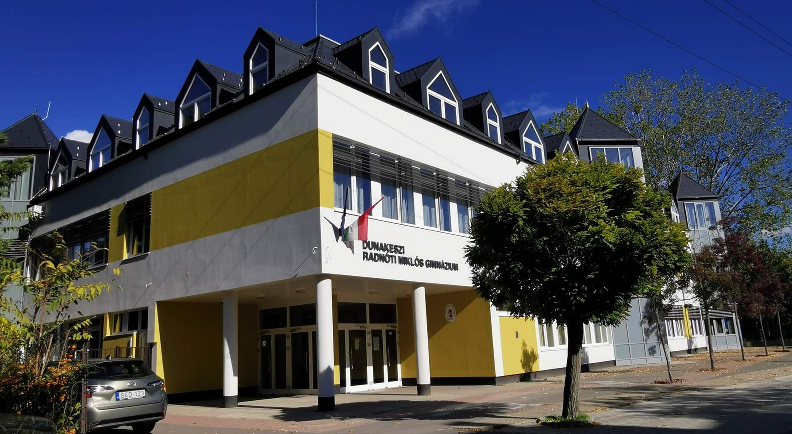

|

Iskolai tanulmányaimat Dunakeszin végeztem. Általános iskolai tanulmányaimat a Széchenyi István Általános iskolában, míg a középiskolai tanulmányaimat a Dunakeszi Radnóti Miklós Gimnáziumban végeztem.
Egyetemi tanulmányaimat 2021 szeptemberében kezdtem meg, a Budapesti Műszaki és Gazdaságtudományi Egyetem Gépészmérnöki Karának energetikai mérnöki alapképzési szakán.
Itt látható egy lista az egyes iskolákban töltött évekről:
- Széchenyi István Általános Iskola: 2008-2012
- Dunakeszi Radnóti Miklós Gimnázium: 2012-2021
- Budapesti Műszaki és Gazdaságtudományi Egyetem: 2021-
 Általános iskolában főleg a matematika és a természetismeret órák voltak a kedvenceim. Nyelvi ismereteimet már itt elkezdtem fejleszteni főleg a német szakkörök keretein belül.
A negyedik osztályos tanulmányaim végén felvételiztem a Dunakeszi Radnóti Miklós Gimnáziumba, és sikeresen felvételt nyertem.
Életem elkövetkezendő kilenc évét itt töltöttem. Alapvetően nyolcosztályos volt a gimnázium, azonban az általános iskolai tanulmányok (8. osztály) befejezése után az osztálynak egy nyelvi előkészítő éve is volt.
Ennek célja az volt, hogy a nyelvtudásunkat intenzíven fejlesszük, és az év végén nyelvvizsgát tehessünk. Ezután kezdődött a középiskola.
Ezen tanulmányaim elején, nagyjából a 9. osztályos évemben döntöttem el, hogy a fizika területével szeretnék foglalkozni. Egy időben fizikusnak is készültem.
Körülbelül a 11. osztályos tanulmányaim során változott meg ez. A fizika iránti érdeklődésem persze nem változott meg, csak más szempontból közelítettem meg azt. Ekkor ugyanis a mérnöki területek felkeltették érdeklődésemet, ráadásul arra jöttem rá, hogy ez a terület sokkal jobban egybevág a céljaimmal.
Így az egyetemi felvételi során a BME-GPK energetikai mérnöki szakát jelöltem meg első helyen, és sikeresen felvételt is nyertem.
Főleg a fizika iránti szenvedélyem miatt választottam ezt a szakot, illetve mert a szak elsődleges területe a tudományterületen belül a hőtan és a termodinamika, amelyek többek közt személyes kedvenceim a fizikában. Most ezen a szakon tanulok, és nagyon élvezem.
A későbbiekben jelenlegi terveim alapján az atomenergetikai specializáción szeretnék majd tanulni. Ennek oka, hogy - még talán a hőtannál is jobban - szeretem az atomfizika és a magfizika területét.
Számomra egyszerűen lenyűgöző az anyag építőköveiben rejlő hatalmas energia, és nagyon szívesen foglalkoznék ennek felhasználásával.
Általános iskolában főleg a matematika és a természetismeret órák voltak a kedvenceim. Nyelvi ismereteimet már itt elkezdtem fejleszteni főleg a német szakkörök keretein belül.
A negyedik osztályos tanulmányaim végén felvételiztem a Dunakeszi Radnóti Miklós Gimnáziumba, és sikeresen felvételt nyertem.
Életem elkövetkezendő kilenc évét itt töltöttem. Alapvetően nyolcosztályos volt a gimnázium, azonban az általános iskolai tanulmányok (8. osztály) befejezése után az osztálynak egy nyelvi előkészítő éve is volt.
Ennek célja az volt, hogy a nyelvtudásunkat intenzíven fejlesszük, és az év végén nyelvvizsgát tehessünk. Ezután kezdődött a középiskola.
Ezen tanulmányaim elején, nagyjából a 9. osztályos évemben döntöttem el, hogy a fizika területével szeretnék foglalkozni. Egy időben fizikusnak is készültem.
Körülbelül a 11. osztályos tanulmányaim során változott meg ez. A fizika iránti érdeklődésem persze nem változott meg, csak más szempontból közelítettem meg azt. Ekkor ugyanis a mérnöki területek felkeltették érdeklődésemet, ráadásul arra jöttem rá, hogy ez a terület sokkal jobban egybevág a céljaimmal.
Így az egyetemi felvételi során a BME-GPK energetikai mérnöki szakát jelöltem meg első helyen, és sikeresen felvételt is nyertem.
Főleg a fizika iránti szenvedélyem miatt választottam ezt a szakot, illetve mert a szak elsődleges területe a tudományterületen belül a hőtan és a termodinamika, amelyek többek közt személyes kedvenceim a fizikában. Most ezen a szakon tanulok, és nagyon élvezem.
A későbbiekben jelenlegi terveim alapján az atomenergetikai specializáción szeretnék majd tanulni. Ennek oka, hogy - még talán a hőtannál is jobban - szeretem az atomfizika és a magfizika területét.
Számomra egyszerűen lenyűgöző az anyag építőköveiben rejlő hatalmas energia, és nagyon szívesen foglalkoznék ennek felhasználásával.
A fizika iránti lelkesedésemhez nagyban hozzátettek a tanulmányi versenyek a középiskolai tanulmányaim során. Ezek közül csak néhányat emelek ki:
- Mikola Sándor Országos Tehetségkutató Fizikaverseny
- Hatvani István Fizikaverseny
- Fizika OKTV
- Ifjú Fizikusok Nemzetközi Versenye (IYPT)
- Országos Szilárd Leó Fizikaverseny
- Középiskolai Matematikai és Fizikai Lapok (KöMaL) P-jelű elméleti fizika feladatok versenye
Az utolsó kettőt szeretném ezek közül kiemelni. Ez a kettő szerettette meg velem az atom- és magfizika területét. A Szilárd Leó tematikája pont eköré épül, de KöMaL pontversenyeiben és rendszeresen előfordulnak ilyen témájú feladatok.
Nagyon sokat köszönhetek tanáraimnak, akik mindig segítettek a felkészülésben, és motiváltak a versenyzésre.
A középiskolai éveim során sokat fejlődtek nyelvi és informatikai készségeim is. Angol nyelvből közép- és felsőfokú nyelvvizsgával is rendelkezem. Emellett társalgási szinten beszélek németül is.
Informatikai ismereteim:
- Microsoft Office-szoftverek:
- Powerpoint
- Excel
- Word
- Access
- Programozás:
- Pascal alapszintű ismerete
- C# alapszintű ismerete
Véleményem szerint a középiskolában töltött évek nagyon hasznosnak bizonyulnak, főleg így, az egyetemi évek alatt.
Nagyon szerencsésnek tartom magam, hogy odaadó, segítőkész tanáraim voltak, akik remekül felkészítik a diákokat az egyetemi évekre.
Az egyetemi tanárokkal is gyakorlatilag csak jó tapasztalataim vannak. Remélem, hogy a kezük alól szorgalmas, okos, képzett szakemberként kerülök majd ki.
|